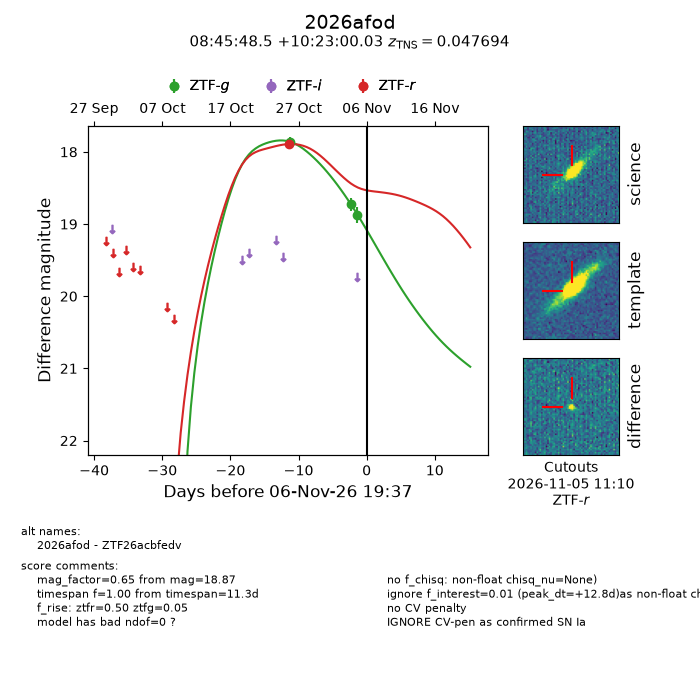
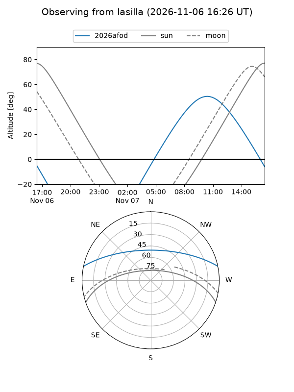
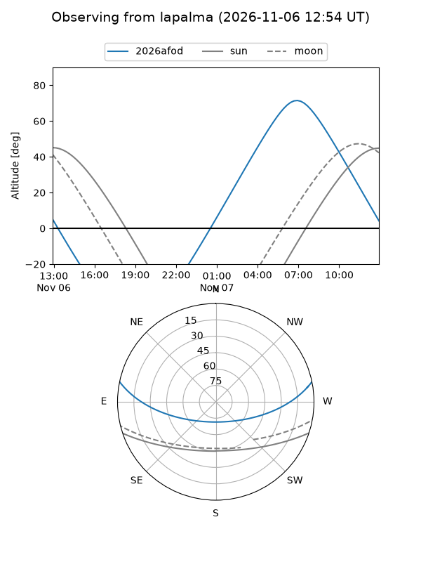
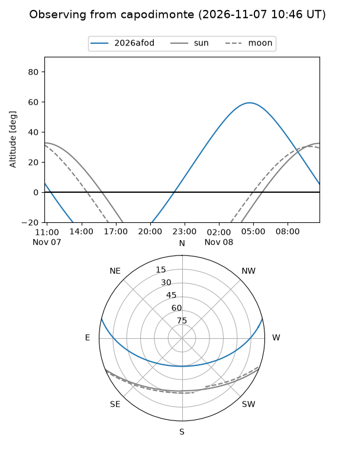
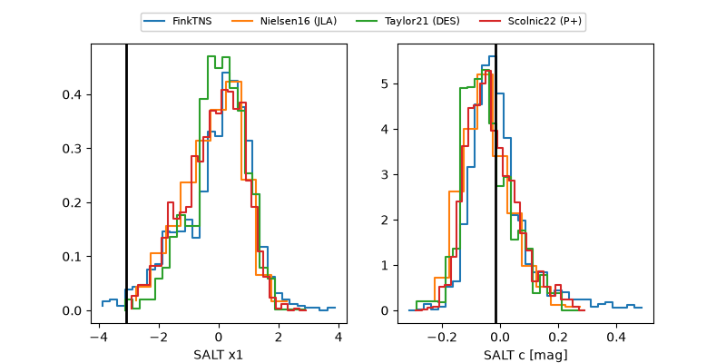

2026afod
Target 2026afod at 2026-11-06 19:39
Aliases and brokers:
FINK-ZTF: ztf.fink-portal.org/ZTF26acbfedv
Lasair-ZTF: lasair-ztf.lsst.ac.uk/objects/ZTF26acbfedv
ALeRCE-ZTF: alerce.online/object/ZTF26acbfedv
YSE-PZ: ziggy.ucolick.org/yse/transient_detail/2026afod
TNS name: wis-tns.org/object/2026afod
Direct TNS query: direct search
alt names
ZTF26acbfedv (ztf,fink_ztf)
2026afod (tns,yse)
Coordinates:
equatorial (ra, dec) = 131.4521,+10.38334
equatorial (HMS+DMS) = 08:45:48.50,+10:23:00.03
galactic (l, b) = (216.5258,+30.07529)
Flags:
TNS type: SN Ia
TNS redshift: 0.0477
peak dt: +12.8
Photometry:
last ztfg=18.87, ztfr=17.89
3 ztfg, 1 ztfr detections
Lightcurve

Visibility



Additional plots
